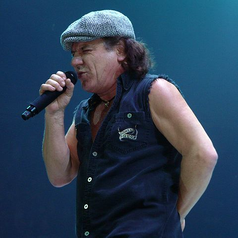

Brian Johnson
Es un cantante británico conocido por ser el vocalista de AC/DC. Fue elegido para reemplazar a Bon Scott, tras su muerte en 1980. Su primer álbum como vocalista de AC/DC fue Back In Black.
Está situado en el puesto número 39 en la lista de los 100 mejores vocalistas de metal de todos los tiempos de la revista Hit Parader.En 2016, tras diagnosticársele problemas auditivos, se vio obligado a abandonar su carrera como vocalista hasta 2020, siendo sustituido en ese tiempo por Axl Rose como vocalista de AC/DC para la gira Rock or Bust.